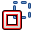

L'atelier Sketcher permet de créer des géométries 2D nommées esquisses, qui seront principalement utilisées par l'Atelier PartDesign, mais potentiellement par d'autres ateliers tels que l'atelier Architectural. En général, l'esquisse est le point de départ de la plupart des modèles de CAO - une esquisse simple peut être 'extrudée' en une forme 3D, une autre esquisse peut être créée pour creuser une cavité à la surface de cette forme, ou encore générer une extrusion. Avec les opérations booléennes, l'atelier Sketcher est au cœur de la conception 3D solide.
L'atelier Sketcher met à l'avant les contraintes, qui permettent de définir des formes 2D selon des critères géométriques précis. Un solveur mathématique calcule le niveau de contrainte de l'esquisse et permet l'exploration interactive des degrés de liberté.
Contents
Les principes de l'esquisse contrainte
Pour décrire comment fonctionne l'atelier Sketcher, il est utile de le comparer avec la méthode « traditionnelle » du dessin.
Dessin traditionnel
La méthode traditionnelle du DAO hérite de la technique de la planche à dessin. Des vues orthogonales sont dessinées manuellement afin de produire des dessins techniques (aussi appelés plans). Les éléments sont dessinées précisément à leur taille réelle (ou à l'échelle). Si vous voulez dessiner une ligne horizontale de 100mm de longueur débutant aux coordonnées (0,0), il faut activer l'outil ligne, cliquer à l'écran ou saisir au clavier les coordonnées du premier point, puis faire une second clic ou saisir les coordonnées du second point, soit (0,100). Ou encore, vous pouvez dessiner la ligne sans vous soucier de sa position, pour la déplacer ensuite. Lorsque vous avez terminé votre dessin, vous ajoutez les cotes.
L'esquisse contrainte
Le Sketcher s'éloigne de cette logique. Les objets n'ont pas à être dessinés aux dimensions exactes que vous planifiez, puisqu'ils seront définis ultérieurement par des contraintes. Ils peuvent être dessinés librement, et tant qu'ils ne sont pas contraints, ils peuvent être manipulés et modifiés. Ces objets en quelque sorte flottent et peuvent être déplacés, étirés, pivotés, redimensionnés, etc. Ceci permet une très grande souplesse au processus de conception.
Que sont les contraintes ?
Les contraintes sont utilisées pour limiter les degrés de liberté d'un objet. Par exemple, une ligne sans contrainte a 4 degrés de liberté (abréviation française "DDL", et anglaise "DOF") : elle peut être déplacée horizontalement ou verticalement, étirée, subir une rotation.
L'application d'une contrainte horizontale ou verticale, ou une contrainte d'angle (par rapport à une autre ligne ou à l'un des axes), limite la capacité de rotation, la laissant ainsi avec 3 degrés de liberté.
Le verrouillage d'un de ses points par rapport à l'origine va encore supprimer 2 degrés de liberté.
Et, l'application d'une contrainte de dimension va supprimer le dernier degré de liberté. La ligne est alors considérée comme entièrement contrainte.
De nombreux objets peuvent être contraints entre eux. Deux lignes peuvent être reliées par un de leurs points de contrainte par un point coïncidant.
Les angles peuvent être définis entre eux, ou ils peuvent être définis perpendiculairement. Une ligne peut être tangente à un cercle ou un arc et ainsi de suite. Un dessin complexe avec plusieurs objets aura un nombre de solutions différentes, et le rendre entièrement contraint signifie qu'une seule des solutions possibles a été réalisée sur la base des contraintes appliquées.
Il existe deux types de contraintes : géométriques et dimensionnelles. Elles sont détaillées dans les sections d''outils' ci-dessous.
L'usage approprié du Sketcher
Le Sketcher n'est pas destiné à la réalisation de plans 2D. Une fois que le croquis a été utilisé pour générer un solide, il est automatiquement caché. Les contraintes sont uniquement visibles en mode édition.
Si vous n'avez besoin que de produire des vues 2D pour l'impression, et n'avez pas besoin de créer de modèles 3D, consultez le module Planche à dessin (Draft) (et gardez à l'esprit que la planche à dessin (Draft) peut également être utilisée pour créer des formes géométriques en 2D qui ne sont pas encore disponibles dans le Sketcher, comme des courbes B-splines ou des polygones).
Processus d'esquisse
Une esquisse est toujours en deux dimensions (2D). Pour créer un solide, on crée une esquisse 2D d'une aire simple fermée et on lui applique une extrusion ou une révolution pour lui ajouter la troisième dimension.
Si l'esquisse possède des segments qui se croisent, ou un point non directement positionné sur un segment, ou encore des écarts entre des points terminaux ou des segments adjacents, l'extrusion ou la pièce de révolution ne créera pas un solide. Cette règle ne s'applique pas aux Géométries de Construction (en bleu).
A l'intérieur d'une aire fermée, nous pouvons avoir des aires indépendantes. Celles-ci deviendront des vides lorsque le solide 3D sera généré.
Les outils
Les outils Atelier Esquisse sont tous situés dans le menu Sketch qui s'affiche lorsque vous chargez votre plan de travail.
Géométries d'esquisse
Ces outils permettent de créer des objets.
-
 Point : dessine un point.
Point : dessine un point. -
 Ligne : dessine une ligne entre 2 points.
Ligne : dessine une ligne entre 2 points. -
 Arc : dessine un segment d'arc à partir du centre, rayon, angle de départ et angle d'arrivée.
Arc : dessine un segment d'arc à partir du centre, rayon, angle de départ et angle d'arrivée. -
 Arc par 3 points : dessine un arc de cercle sur deux points et un troisième point pour la circonférence.
Arc par 3 points : dessine un arc de cercle sur deux points et un troisième point pour la circonférence. -
 Cercle : dessine un cercle à partir de son centre et du rayon.
Cercle : dessine un cercle à partir de son centre et du rayon. -
 Cercle par 3 points : dessine un cercle à partir de trois points.
Cercle par 3 points : dessine un cercle à partir de trois points.
-
 Sections coniques :
Sections coniques :
-
 Ellipse : dessine une ellipse à partir du centre, d'un point sur le grand rayon et d'un point sur le petit rayon. (v0.15)
Ellipse : dessine une ellipse à partir du centre, d'un point sur le grand rayon et d'un point sur le petit rayon. (v0.15) -
 Ellipse par 3 points : dessine une ellipse à partir du grand diametre (2 points) et d'un point sur le petit rayon. (v0.15)
Ellipse par 3 points : dessine une ellipse à partir du grand diametre (2 points) et d'un point sur le petit rayon. (v0.15) -
 Arc d'ellipse : dessine une ellipse à partir du centre, d'un point sur le grand rayon, avec un point de départ et un point d'arrivée. (v0.15)
Arc d'ellipse : dessine une ellipse à partir du centre, d'un point sur le grand rayon, avec un point de départ et un point d'arrivée. (v0.15)  Arc d'hyperbole : dessine un arc d'hyperbole. (v0.17)
Arc d'hyperbole : dessine un arc d'hyperbole. (v0.17) Arc de parabole : dessine un arc de parabole. (v0.17)
Arc de parabole : dessine un arc de parabole. (v0.17)
-
-
 Polyligne : dessine une ligne composée de plusieurs segments connectés entre eux.
Polyligne : dessine une ligne composée de plusieurs segments connectés entre eux. -
 Rectangle : dessine un rectangle à partir de 2 points opposés.
Rectangle : dessine un rectangle à partir de 2 points opposés. -
 Triangle : dessine un triangle équilatéral inscrit dans un cercle. (v0.15)
Triangle : dessine un triangle équilatéral inscrit dans un cercle. (v0.15) -
 Carré : dessine un carré inscrit dans un cercle. (v0.15)
Carré : dessine un carré inscrit dans un cercle. (v0.15) -
 Pentagone : dessine un pentagone régulier inscrit dans un cercle. (v0.15)
Pentagone : dessine un pentagone régulier inscrit dans un cercle. (v0.15) -
 Hexagone : dessine un hexagone régulier inscrit dans un cercle. (v0.15)
Hexagone : dessine un hexagone régulier inscrit dans un cercle. (v0.15) -
 Heptagone : dessine un heptagone régulier inscrit dans un cercle. (v0.15)
Heptagone : dessine un heptagone régulier inscrit dans un cercle. (v0.15) -
 Octogone : dessine un octogone régulier inscrit dans un cercle. (v0.15)
Octogone : dessine un octogone régulier inscrit dans un cercle. (v0.15) -
 Clavette : dessine une clavette de type A en entrant le centre du demi-cercle, le point pour le rayon et le point final du deuxième demi-cercle. (v0.15)
Clavette : dessine une clavette de type A en entrant le centre du demi-cercle, le point pour le rayon et le point final du deuxième demi-cercle. (v0.15) -
 Congé : crée un congé entre deux lignes connectées en un point. Sélectionnez les deux lignes, ou cliquez sur le sommet commun, puis activez l'outil.
Congé : crée un congé entre deux lignes connectées en un point. Sélectionnez les deux lignes, ou cliquez sur le sommet commun, puis activez l'outil. -
 Ajuster : ajuste une ligne, un cercle ou un arc par rapport à l'emplacement du clic.
Ajuster : ajuste une ligne, un cercle ou un arc par rapport à l'emplacement du clic. -
 Géométrie externe : crée une arête liée à une géométrie externe.
Géométrie externe : crée une arête liée à une géométrie externe. -
 Mode Construction : bascule un élément vers / depuis le mode construction. Les éléments de construction (en bleu) sont ignorés lors d'une opération de géométrie 3D (obsolète, version 0.15).
Mode Construction : bascule un élément vers / depuis le mode construction. Les éléments de construction (en bleu) sont ignorés lors d'une opération de géométrie 3D (obsolète, version 0.15). -  Mode Construction : bascule les éléments vers / depuis le mode Construction. Dans FreeCAD v0.16, il a été ajouté la possibilité de créer une géométrie directement dans le Mode Construction, et l'icone a été changée. Le fait de sélectionner une géométrie existante et de cliquer sur cet outil bascule la géométrie en mode Construction. Dans FreeCAD v0.16, quand on clique sur cet outil alors qu'aucune géométrie n'est sélectionnée, cela change le mode pour les prochains objets à créer (Normal / Construction).
{kind=link}
Contraintes d'esquisse
Les contraintes sont utilisées pour définir des règles entre les éléments d'esquisse et pour verrouiller l'esquisse le long des axes vertical et horizontal.
Non associées à des données numériques
-
 Coïncident : crée une contrainte coïncidente (point sur point) entre deux sommets sélectionnés.
Coïncident : crée une contrainte coïncidente (point sur point) entre deux sommets sélectionnés. -
 Point sur objet : crée une contrainte point-sur-objet sur les éléments sélectionnés. L'un des éléments doit être un sommet, l'autre une ligne, un arc ou un cercle.
Point sur objet : crée une contrainte point-sur-objet sur les éléments sélectionnés. L'un des éléments doit être un sommet, l'autre une ligne, un arc ou un cercle. -
 Vertical : crée une contrainte de verticalité sur les lignes ou segments de polylignes sélectionnés. Plus d'un élément peut être sélectionné.
Vertical : crée une contrainte de verticalité sur les lignes ou segments de polylignes sélectionnés. Plus d'un élément peut être sélectionné. -
 Horizontal : crée une contrainte d'horizontalité sur les lignes ou segments de polylignes sélectionnés. Plus d'un élément peut être sélectionné.
Horizontal : crée une contrainte d'horizontalité sur les lignes ou segments de polylignes sélectionnés. Plus d'un élément peut être sélectionné. -
 Parallèle : crée une contrainte de parallélisme entre deux lignes sélectionnées.
Parallèle : crée une contrainte de parallélisme entre deux lignes sélectionnées. -
 Perpendiculaire : crée une contrainte de perpendicularité entre deux lignes sélectionnées.
Perpendiculaire : crée une contrainte de perpendicularité entre deux lignes sélectionnées. -
 Tangente : crée une contrainte de tangence entre deux éléments sélectionnés, ou de colinéarité entre deux lignes.
Tangente : crée une contrainte de tangence entre deux éléments sélectionnés, ou de colinéarité entre deux lignes. -
 Égalité : crée une contrainte d'égalité entre au moins deux éléments sélectionnés. Contraindra la longueur pour des lignes et le rayon pour des cercles et des arcs.
Égalité : crée une contrainte d'égalité entre au moins deux éléments sélectionnés. Contraindra la longueur pour des lignes et le rayon pour des cercles et des arcs. -
 Symétrie : crée une contrainte symétrique entre deux points par rapport à une ligne.
Symétrie : crée une contrainte symétrique entre deux points par rapport à une ligne.
Associées à des données numériques
Pour ces contraintes vous pouvez utiliser une expression. Les données peuvent prendre la forme d'une feuille de calcul de l'atelier Spreadsheet.
-
 Fixe : crée une contrainte fixe sur le sommet sélectionné en ajoutant des dimensions horizontale et verticale relatives à l'origine (les dimensions peuvent être éditées par la suite).
Fixe : crée une contrainte fixe sur le sommet sélectionné en ajoutant des dimensions horizontale et verticale relatives à l'origine (les dimensions peuvent être éditées par la suite). -
 Distance horizontale : fixe la distance horizontale entre deux sommets ou extrémités de ligne. Si un seul élément est sélectionné, la distance sera relative à l'origine.
Distance horizontale : fixe la distance horizontale entre deux sommets ou extrémités de ligne. Si un seul élément est sélectionné, la distance sera relative à l'origine. -
 Distance verticale : fixe la distance verticale entre deux sommets ou extrémités de ligne. Si un seul élément est sélectionné, la distance sera relative à l'origine.
Distance verticale : fixe la distance verticale entre deux sommets ou extrémités de ligne. Si un seul élément est sélectionné, la distance sera relative à l'origine. -
 Longueur : fixe la longueur d'une ligne sélectionnée, ou la distance entre une ligne et un point. La distance sera perpendiculaire à la ligne.
Longueur : fixe la longueur d'une ligne sélectionnée, ou la distance entre une ligne et un point. La distance sera perpendiculaire à la ligne. -
 Rayon : crée une contrainte radiale sur un arc ou un cercle sélectionné en ajoutant un rayon. Cette dimension pourra être éditée par la suite.
Rayon : crée une contrainte radiale sur un arc ou un cercle sélectionné en ajoutant un rayon. Cette dimension pourra être éditée par la suite. -
 Angle Interne : crée une contrainte d'angle interne entre deux lignes sélectionnées.
Angle Interne : crée une contrainte d'angle interne entre deux lignes sélectionnées. -
 Loi de Snell : contraint deux lignes à respecter une loi de réfraction simulant la trajectoire de la lumière à travers une interface. (v 0.15)
Loi de Snell : contraint deux lignes à respecter une loi de réfraction simulant la trajectoire de la lumière à travers une interface. (v 0.15) - Alignement Interne : aligne les éléments selectionnés à la forme sélectionnée (par exemple, contraint une ligne à devenir le grand axe d'une ellipse).
-
 Basculement de Contrainte : bascule la barre d'outils ou les contraintes sélectionnées vers / depuis le Mode Référence. v0.16
Basculement de Contrainte : bascule la barre d'outils ou les contraintes sélectionnées vers / depuis le Mode Référence. v0.16
{kind=link}
Autres
-
 Nouvelle esquisse : crée une nouvelle esquisse sur un plan ou une face sélectionnée. Si rien n'est sélectionné, le plan XY sera utilisé par défaut.
Nouvelle esquisse : crée une nouvelle esquisse sur un plan ou une face sélectionnée. Si rien n'est sélectionné, le plan XY sera utilisé par défaut.
-
 Éditer l'esquisse : édite l'esquisse sélectionnée.
Éditer l'esquisse : édite l'esquisse sélectionnée.
-
 Quitter l'esquisse : quitte le mode d'édition de l'esquisse actuelle.
Quitter l'esquisse : quitte le mode d'édition de l'esquisse actuelle.
-
 Vue de l'esquisse : définit l'affichage de l'objet perpendiculairement au plan de l'esquisse.
Vue de l'esquisse : définit l'affichage de l'objet perpendiculairement au plan de l'esquisse.
-
 Appliquer une esquisse sur une face... : applique une esquisse sur une face ou un solide sélectionné.
Appliquer une esquisse sur une face... : applique une esquisse sur une face ou un solide sélectionné.
- Réorienter l'esquisse : réoriente l'esquisse en cours.
- Valider l'esquisse... : vérifier la tolérance des différents points et les faire correspondre entre eux.
-
 Fusionner les esquisses : fusionner deux ou plusieurs esquisses. v 0.15
Fusionner les esquisses : fusionner deux ou plusieurs esquisses. v 0.15
-
 Esquisse miroir : crée une esquisse miroir selon l'axe X, l'axe Y ou l'origine. [v 0.16]
Esquisse miroir : crée une esquisse miroir selon l'axe X, l'axe Y ou l'origine. [v 0.16]
-
 Fermer la forme : ferme une forme en appliquant des contraintes coïncidentes aux points d'arrivée. v 0.15
Fermer la forme : ferme une forme en appliquant des contraintes coïncidentes aux points d'arrivée. v 0.15
-
 Connecter les côtés : connecte les éléments de l'esquisse en appliquant des contraintes coïncidentes aux points d'arrivée. v 0.15
Connecter les côtés : connecte les éléments de l'esquisse en appliquant des contraintes coïncidentes aux points d'arrivée. v 0.15
-
 Sélectionner les contraintes : sélectionne les contraintes d'un élément de l'esquisse. v 0.15
Sélectionner les contraintes : sélectionne les contraintes d'un élément de l'esquisse. v 0.15
-
 Sélectionner l'origine : sélectionne l'origine de l'esquisse. v 0.15
Sélectionner l'origine : sélectionne l'origine de l'esquisse. v 0.15
-
 Sélectionner l'axe vertical : sélectionne l'axe vertical de l'esquisse. v 0.15
Sélectionner l'axe vertical : sélectionne l'axe vertical de l'esquisse. v 0.15
-
 Sélectionner l'axe horizontal : sélectionne l'axe horizontal de l'esquisse. v 0.15
Sélectionner l'axe horizontal : sélectionne l'axe horizontal de l'esquisse. v 0.15
-
 Sélectionner les contraintes redondantes : sélectionne les contraintes redondantes de l'esquisse. v 0.15
Sélectionner les contraintes redondantes : sélectionne les contraintes redondantes de l'esquisse. v 0.15
-
 Sélectionner les contraintes conflictuelles : sélectionne les contraintes conflictuelles de l'esquisse. v 0.15
Sélectionner les contraintes conflictuelles : sélectionne les contraintes conflictuelles de l'esquisse. v 0.15
-
 Sélectionner les éléments associés aux contraintes : sélectionne les éléments associés aux contraintes. v 0.15
Sélectionner les éléments associés aux contraintes : sélectionne les éléments associés aux contraintes. v 0.15
-
 Montrer / Cacher une géometrie interne : recrée / supprime la géométrie inutile alignée à la géométrie interne de l'élément sélectionné (s'applique uniquement à l'ellipse pour le moment). v 0.15
Montrer / Cacher une géometrie interne : recrée / supprime la géométrie inutile alignée à la géométrie interne de l'élément sélectionné (s'applique uniquement à l'ellipse pour le moment). v 0.15
-
 Symétrie : crée une copie symétrique par rapport à une ligne donnée. [v 0.16]
Symétrie : crée une copie symétrique par rapport à une ligne donnée. [v 0.16]
-
 Clone : clone un élément de l'esquisse. [v 0.16]
Clone : clone un élément de l'esquisse. [v 0.16]
-
 Copie : copie un élément de l'esquisse. [v 0.16]
Copie : copie un élément de l'esquisse. [v 0.16]
-
 Aire rectangulaire : crée une aire à partir des éléments sélectionnés. [v 0.16]
Aire rectangulaire : crée une aire à partir des éléments sélectionnés. [v 0.16]
Péférences
-
 Préférences...: Préférences disponibles dans Sketcher Tools.
Préférences...: Préférences disponibles dans Sketcher Tools.
Bonnes pratiques
Chaque utilisateur de CAO développe sa propre philosophie au cours de son travail, mais il y a quelques principes généraux utiles à suivre.
- Une série d'esquisses simples est plus facile à gérer qu'une seule esquisse complexe. Par exemple, la première esquisse peut être créée pour la fonction de base 3D (soit une extrusion ou une révolution), tandis que la seconde peut contenir des découpes ou des cavités (poches). Certains détails peuvent être laissés de côté pour être réalisés plus tard avec des fonctions 3D. Vous pouvez aussi éviter les congés dans votre croquis, s'il y en a un trop grand nombre et les ajouter plus tard en tant que fonctions 3D.
- Toujours créer un profil fermé, sinon votre esquisse ne produira pas un solide mais un ensemble de faces ouvertes. Si vous ne voulez pas que certains objets soient inclus dans votre construction, transformez-les en éléments de construction avec l'outil Mode de Construction.
- Utilisez la fonction Contraintes auto (dans l'onglet Tâches) pour limiter le nombre de contraintes que vous aurez à ajouter manuellement.
- En règle générale, appliquez d'abord les contraintes géométriques, puis les contraintes dimensionnelles, et enfin verrouillez votre esquisse en dernier. Mais rappelez-vous : les règles sont faites pour être contournées. Si vous rencontrez des difficultés de manipulation de votre esquisse, il peut être utile de contraindre d'abord quelques objets avant de compléter votre profil.
- Si possible, positionnez le centre de votre esquisse à l'origine (0,0) avec la Contrainte de Verrouillage
 . Si votre dessin n'est pas symétrique, localisez un de ses points à l'origine, ou choisissez des nombres entiers pour verrouiller les distances.
. Si votre dessin n'est pas symétrique, localisez un de ses points à l'origine, ou choisissez des nombres entiers pour verrouiller les distances.
Dans v0.12, les contraintes extérieures (contraignant l'esquisse à la forme géométrique 3D existante comme les bords, et d'autres esquisses) ne sont pas mises en œuvre.
Cela signifie que pour positionner un croquis par rapport à une forme géométrique existante, vous aurez besoin d'entrer les distances manuellement. Une contrainte de verrouillage à (25,75) de l'origine est plus facile à retenir que (23.47,73.02).
- Si vous avez la possibilité de choisir entre la contrainte Longueur
 et les contraintes Distance Horizontale
et les contraintes Distance Horizontale  ou Verticale
ou Verticale  , utilisez de préférence ces dernières. Les contraintes Distance Horizontale et Verticale sont moins gourmandes en ressources.
, utilisez de préférence ces dernières. Les contraintes Distance Horizontale et Verticale sont moins gourmandes en ressources.
- De façon générale, les meilleurs contraintes à utiliser sont les contraintes Horizontal et Vertical, les contraintes Longueur Horizontale et Longueur Verticale, Tangente Point-à-Point. Si possible, limiter l'utilisation des contraintes suivantes : Longueur, Tangente Bord-à-Bord, Point sur Ligne, Symétrie.